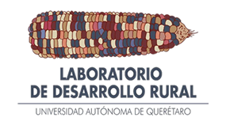

Valle agrícola de Concá · Arroyo Seco, Querétaro
El valle se cuida desde adentro



En 2025, ejidatarios, productores, habitantes, autoridades y universitarios se sentaron tres veces frente al mismo mapa para decidir cómo crece el valle sin perder sus tierras de riego, su agua y su gente. Esto es lo que salió.
Lo que está pasando
$1,000 el m²A ese precio ya se vende la tierra entre Las Trancas y El Salitrillo, muchas veces sin escrituras.
De 40 metros a 12La gente recuerda un río de 35 a 45 metros de ancho hace 35 años. Hoy mide de 10 a 15.
Reglas sin dientes«Las leyes existen, pero no se aplican»: nadie vigila y no hay forma segura de avisar.
Siete propuestas para cuidar el territorio
| 0 | Área de Conservación Agrícola | Un polígono que protege las tierras de riego más productivas y prohíbe lotificarlas. | 455 ha |
| 1 | Corredor del río Concá y sus arroyos | Senderos con sombra, zonas de nado ordenadas y cauces protegidos. | 24.5 km |
| 2 | Manantiales y acequias | Más protección para los manantiales y acequias convertidas en paseos. | 84 ha |
| 3 | Camino Real y puertas del cerro | El antiguo camino reforestado y una franja que custodia la selva baja. | 7.8 km |
| 4 | Carretera 69 | Una franja con dos velocidades: tránsito y vida comunitaria, con pasos de fauna. | 9.4 km |
| 5 | Nuevos barrios y turismo | Crecer primero en lotes con servicios y al norte de Concá, no sobre las parcelas. | 25.3 ha |
| 6 | Corredores biológico-productivos | Un anillo verde de 20 metros entre el pueblo y las parcelas. | 58.75 ha |
Cómo se logra: tres pesos y una base
Valorar. Que todos sepan qué se puede y qué no en cada parte del valle.
Vigilar y responder. Que brincarse la regla deje de salir gratis: candados del ejido, licencias que se cobran y un reporte que recibe respuesta.
Convenir. Que quedarse con la parcela deje más que venderla: menos predial y un mercado para la cosecha.
La base: una mesa del valle donde se sientan el municipio, los ejidos, las dependencias y la gente.
¿Esto se puede aquí?Consulta qué permite el plan municipal en tu zona:
sepuedeaqui.campusconcauaq.workers.dev
sepuedeaqui.campusconcauaq.workers.dev
¿Viste un cambio en el valle?Conoce el reporte ciudadano y todas las propuestas:
campus-conca.github.io/cidaf/ecotonos
campus-conca.github.io/cidaf/ecotonos